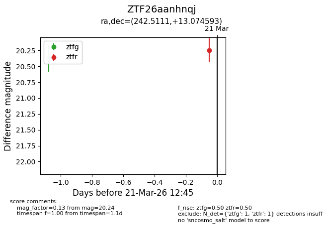
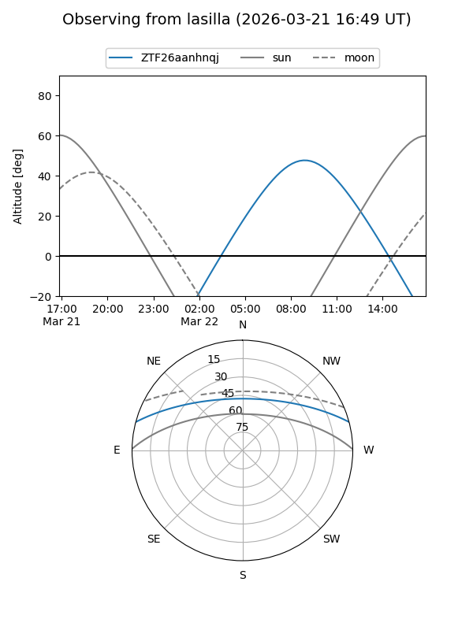
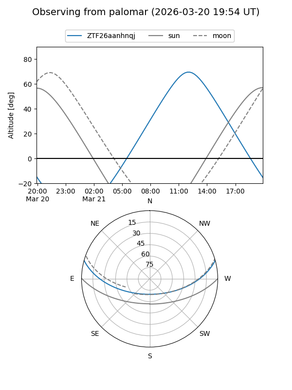
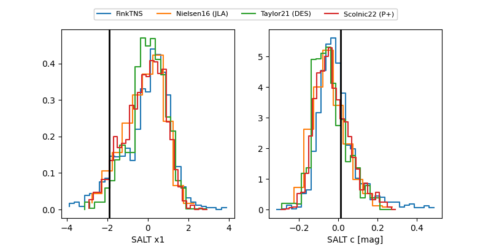

ZTF26aanhnqj
Target ZTF26aanhnqj at 2026-03-21 12:47
Aliases and brokers:
FINK: link
Lasair: link
ALeRCE: link
alt names
ZTF26aanhnqj (ztf,fink_ztf)
Coordinates:
equatorial (ra, dec) = 242.5111,+13.07459
equatorial (HMS+DMS) = 16:10:02.66,+13:04:28.53
galactic (l, b) = (26.3061,+41.63811)
Flags:
Photometry:
last ztfg=20.37, ztfr=20.24
1 ztfg, 1 ztfr detections
Lightcurve

Visibility


Additional plots
